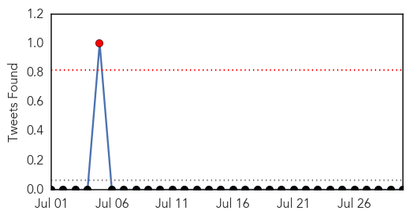

30 Day Trends
Web: 0 alerts, 0 warnings
Twitter: 0 alerts, 0 warnings
Top Articles:
- 0.996
- Update: Dengue Fever Outbreak declaration includes Samoa now
- 0.993
- Warning! Children At Risk – Severe Dengue Can Kill « Karen News
- 0.978
- Health dept fears outbreak of diseases in flood-hit areas
- 0.817
- Flood aftermath: Provinces start reporting disease outbreak
- 0.799
- Students learn how to avoid catching dengue
- 0.674
- 30-fold rise in dengue cases worldwide in last 50 years, says MoS Health Shripad Naik
- 0.615
- Health Dept fails to devise strategy to control dengue
- 0.562
- 30-fold rise in dengue cases worldwide in last 50 yrs: Naik
Top Tweets:
- 0.584
- Flavivirus news: A Dengue Fever Q&A - Pollstar: A Dengue Fever Q&APollstarFor the uninitiated, ... http://t.co/bl9S5LBY9d pathogenposse
Web/News Articles

Tweets
Article Locations

Article Confidences